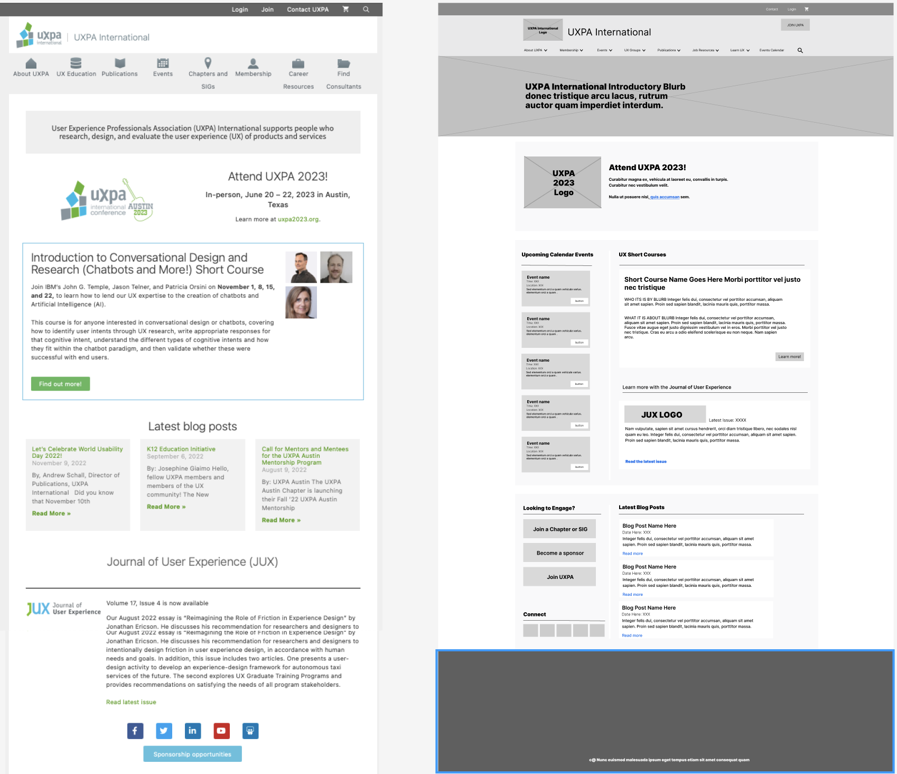
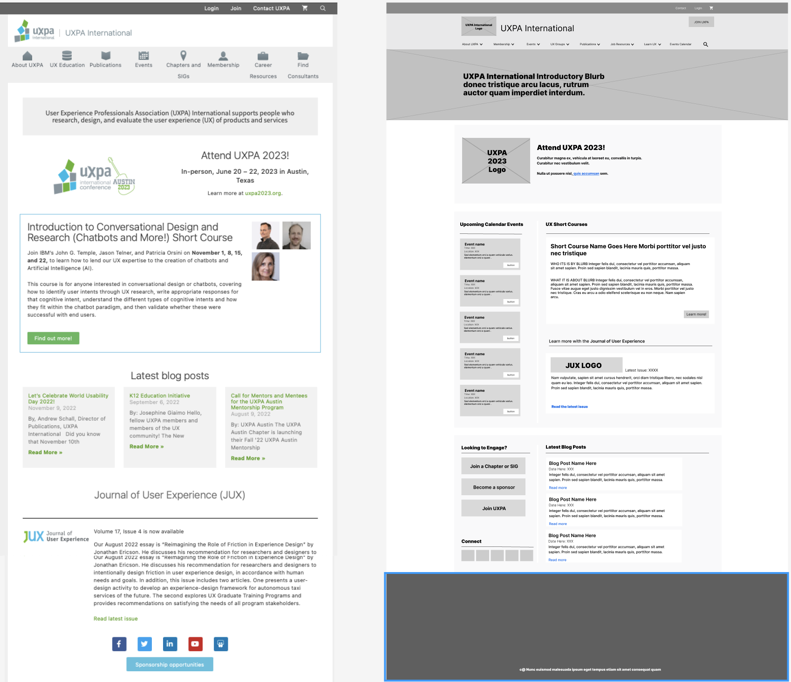

UXPA Redesign Project
This project involved the SEO indexing, card sorting, tree testing, and redesigning of the current User Experience Professionals Association website for a second-year Information Architecture course project.
Initial Research
SEO + User Research
In the first stages of the project we conducted a index of the website's content using Screaming Frog's SEO Spider, then a series of user tests through Optimal Workshops
What I did
- Indexing & organizing content
- Creating & conducting card sorting activity
- Creating & conducting tree tests
- Writing reports
- Restructuring content based on user research
 

Site Redesign
Sitemap & Wireframes
In the next stages of this project we created a restructured sitemap of the UXPA website's content, and used it as a guideline for our redesigning of the site. Wireframe redesigns were created for all major sections of the website.
What I did
- Creating sitemap
- Creating wireframes
- Writing report
My Angle
User Group Considerations
The identification of user groups and their search behaviors was a major consideration in this project. We identified the two core user groups of the UXPA website as being UX practioners and UX students. To better understand how to structure the website's content, we first needed to understand how users would be interacting with the site. Current research on the search behaviors of students indicated that when they stop searching indicates when they have reached the limits of their current project/objectives requirements: they tend to look only to satisfy their information needs within the bounds of their current objective's requirements (Prabha et al.). Knowing this, we can expect that students are unlikely to explore beyond what they deem necessary. As such, a site with more widely spread content across many different pages is less likely to accommodate their search behavior: they don't want to explore endlessly. As such, one of our major goals with the redesign was to limit the number of low-content pages in the Education (relabeled Learn UX in our design) section of the UXPA website and instead focus on more clearly labeled, condensed content where students can browse what information is offered in one place, making it more likely for them to consume more content. This way, students would be less likely to leave the site after a) reaching what they considered to be a satisfactory amount of information and deciding not to explore further onto other pages or b) assuming based on the limited content on each page that the website will not satisfy their information needs.
UX practitioners on the other hands are more likely to know the exact kind of content (such as topics on users, information systems, etc.) they want to find due to experience in the field of UX. As such, they are more likely display pearl-growing or specific-item search behaviors (Lin & Hertzum). Knowing this, we wanted to implement a faceted search system into our design. The current search system is less efficient in allowing users to find specific areas/facets of information. Due to their familiarity with UX, UX practitioners will be more likely to recognize the current system as a form of bad design. They will be more aware/critical of issues than non-practitioners, so having ineffective or inefficient systems may make them less likely to trust UXPA as a source of reliable UX guidance/information. As such, we felt it important to address this in our redesign.
Prabha, C., Connaway S. L., Olszewski L., & Jenkins R. L. (2007). What is enough? Satisficing information needs. Journal of Documentation, 63(1), 74-89. https://doi.org/0.1108/00220410710723894
Lin, Y., & Hertzum, M. (2019). Service designers’iInformation seeking: Consulting peers versus documenting designs. Proceedings of HCI International, 1032, 41-48. https://doi.org/10.1007/978-3-030-23522-2_6